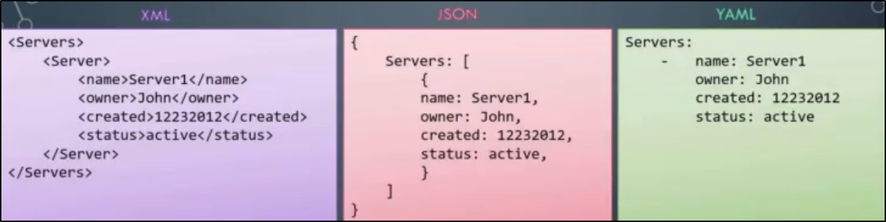

Introduzione a YAML
I file YAML sono una tipologia di file molto simili ad altri come JSON o XML:

Gli YAML file sono una tipologia di file utilizzati per rappresentare delle configurazioni.
La tipologia utilizzata è un semplice "chiave: valore"
NB: Dopo i due punti, deve esserci OBBLIGATORIAMENTE UNO SPAZIO!
Per indicare che un elemento appartiene ad un array, viene usato il trattino "-"
Per indicare un dizionario, bisogna indentare (come in Python!)

NB: Il numero di spazi è essenziale!
Nell'esempio: i due ultimi elementi, per via di uno spazio in più,
vengono identificati come elementi sotto "Calories".
Questo genera un errore perché "Calories" ha già un valore settato!
E' possibile settare 2 cose: un valore diretto o un hashmap.

Portiamo il tutto ad un new level:
Fruits è un array di dizionari!

Speghiamo le differenze tra i vari elementi, come:
Dizionari, Liste e Liste di Dizionari.
1) Quando vi sono delle proprietà da salvare,
Dizionario e perfino Dizionari nested vanno bene!

2) Quando vi è solo una lista di cose da salvare, senza proprietà,
un Array è più consigliato.

Nel caso dobbiamo aggiungere dettagli, basta usare i dizionari!

Ecco alcune differenze chiave tra Dizionari ed Array: